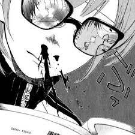

|  | ยาโออิ (ญี่ปุ่น: やおい; โรมาจิ: yaoi) เป็นหนึ่งในสื่อนวนิยายที่มีต้นกำเนิดมาจากญี่ปุ่น ซึ่งตัวละครหลักมีความสัมพันธ์ระหว่างชายกับชายด้วยกัน โดยส่วนมากผลงานนี้ถูกสร้างขึ้นจากผู้หญิงเพื่อผู้อ่านที่เป็นผู้หญิง ผลงานรูปแบบนี้แตกต่างจากสื่อลามกของเพศเดียวกันที่กลุ่มคนดูเป็นกลุ่มคนผู้มีความหลากหลายทางเพศ แต่ทั้งนี้ทั้งนั้นนวนิยายแนวนี้ก็เป็นที่ให้ความสนใจในหมู่เพศชายและยังมีนักเขียนเป็นผู้ชายอีกด้วย ในวงการนิยายและการ์ตูน เริ่มแรกเดิมทียาโอย หมายถึง ประเภทหนึ่งของงานโดจินชิซึ่งเป็นผลงานล้อเลียนมังงะหรืออนิเมะที่กำลังเป็นที่นิยมในขณะนั้น แต่ปัจจุบันความหมายได้เปลี่ยนไป กลายเป็นลักษณะความสัมพันธ์แบบรักร่วมเพศเชิงอีโรติกหรือโรแมนติกระหว่างชายกับชาย ซึ่งอยู่ในรูปแบบของมังงะ อนิเมะ เกม นิยาย และโดจินชิ ต่อมาในญี่ปุ่นได้เกิดคำศัพท์ใหม่แทนที่ยะโอะอิ คือคำว่า บอยส์เลิฟ (Boy's Love) (ญี่ปุ่น: ボーイズラブ; โรมาจิ: Booizu Rabu) แม้ชื่อจะบอกว่าเป็นความรักของเด็กหนุ่ม แต่ในความเป็นจริงแล้วสามารถใช้ได้กว้างตั้งแต่เรื่องราวระหว่างวัยรุ่นไปจนถึงคนสูงวัย แต่มีศัพท์เฉพาะ คือ ความสัมพันธ์กับชายวัยเยาว์ เรียก โชะตะคอน ถ้าเป็นชายสูงอายุเรียก โอจิคอน ส่วนในต่างประเทศเช่น สหรัฐอเมริกา ไทย ยังคงนิยมใช้คำว่า ยะโอะอิ[ต้องการอ้างอิง] นิยามความสัมพันธ์ของคู่รักในยาโอยจะแบ่งออกเป็นสองตำแหน่งคือ seme (เซ-เมะ) เป็นคนที่อยู่ตำแหน่งบนหรือเป็นผู้นำ กับ uke (อุ-เคะ) ผู้ที่อยู่ตำแหน่งล่างหรือเป็นผู้ตาม ธีมส่วนใหญ่ของยาโอยก็จะมี ความสัมพันธ์ต้องห้าม ข่มขืน เหตุการณ์ร้ายแรง และคอมเมดี้ โดยชนิดของนิยายประเภทนี้ก็จะมีหลายแนวไม่ว่าจะเป็น ชีวิตรักวัยเรียน ไซไฟ ย้อนยุค แฟนตาซี สืบสวน และหมวดหมู่ย่อยออกมาคือ Omegaverse, Rainverse, Colorverse, Coffeeverse และอื่นๆอีกมากมายตามจินตนาการของผู้สร้าง ในแต่ละ Verse ยังมีแยกย่อยและปรับเปลี่ยนเรื่อยๆ เปรียบเทียบได้กับหนังสือที่นำมาดัดแปลงทำใหม่เป็นแบบของผู้เขียนเอง แต่ยังคงเค้าโครงของเรื่องเดิมอยู่ |
|---|---|
คำว่า yaoi กำเนิดครั้งแรงช่วงปลายยุค 70 โดยซาคาตะ ยาซุโกะและฮัตสุ รินโกะ ที่ต้องการล้อเลียนโครงสร้างของงานเขียนโคลงจีนยุคเก่าซึ่งต้องประกอบด้วย ki (introduction บทนำ), syo (development ดำเนินเรื่อง), ten (transition จุดผกผัน), และ ketsu (conclusion บทสรุป) โดยสร้างงานที่ Yamanashi (no climax-ไม่มีไคลแมกซ์) Ochinashi (no point-ไม่มีประเด็น) Iminashi (no meaning-ไม่มีความหมาย) กลายมาเป็นงานโดจินชิที่ชื่อ Loveri ต่อมาในยุค 80 คำว่า yaoi ได้หมายความถึงงานการ์ตูนล้อเลียนที่มีผู้ชายสองคนเป็นตัวเอกและเน้นความสัมพันธ์ทางเพศเป็นเนื้อหาหลัก ส่วน shonenai หมายถึงการ์ตูนที่มีผู้ชายสองคนเช่นกัน แต่เน้นความรักโรแมนติกและน่ารักอ่อนโยนกว่า ทั้ง yaoi และ shonenai ไม่ใช่การ์ตูนที่กล่าวถึงความรักของ เกย์ แต่เป็นรูปแบบหนึ่งของความรักที่ "เหนือ" กว่าความรักระหว่างคนต่างเพศทั่วไป แต่ถึงกระนั้นก็ตาม ต้นกำเนิดของความสัมพันธ์แบบชายกับชายในการ์ตูนไม่ได้เกิดในดงโดจินชิเป็นที่แรก แต่กลับเกิดในงานการ์ตูนที่มีพิมพ์ขายแบบเป็นล่ำเป็นสัน เรื่องนั้นคือ Kaza to Ki no Uta หรือ A Poem of Wind and Trees งานเขียนของทาเคมิยะ เคย์โกะ ซึ่งตีพิมพ์ในนิตยสารการ์ตูนผู้หญิงในปี 1976 เรื่องนี้เป็นเรื่องของกิลเบิร์ต คอคโต เด็กหนุ่มรูปงามในโรงเรียนประจำแห่งหนึ่งที่มีอันต้องร่วมหอลงเตียงกับเพื่อนหนุ่มรูมเมท ต่อมาในปี 1978 นิตยสาร Comic June (อ่านว่าจู-เน่) ได้วางแผงช่วงเวลาเดียวกับที่กลุ่มของซาคาตะคิดค้นคำว่า yaoi ถือเป็นนิตยสารเล่มแรกที่มีแต่เรื่องชายกับชาย[1] |